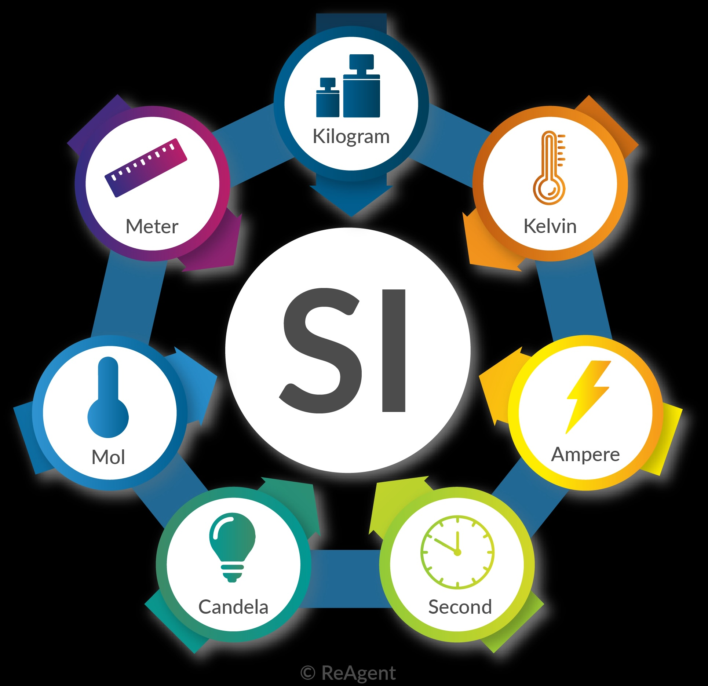
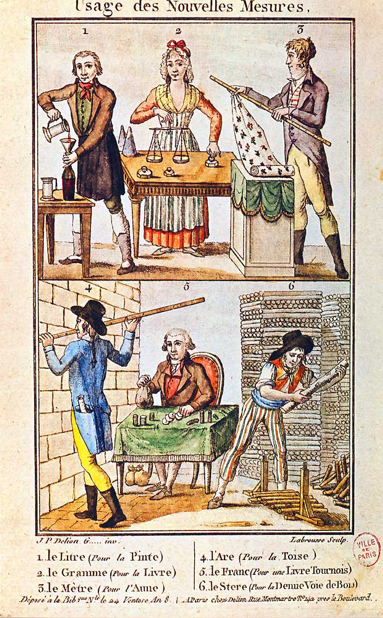
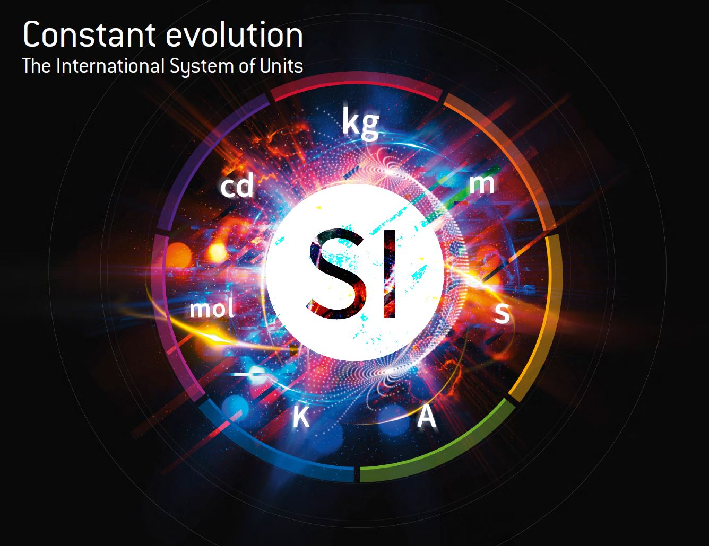
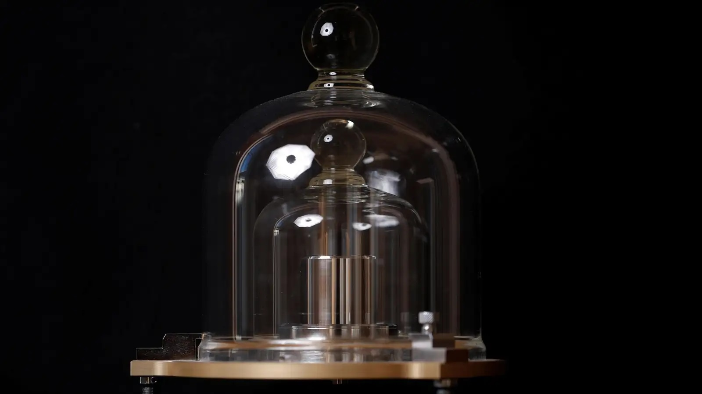
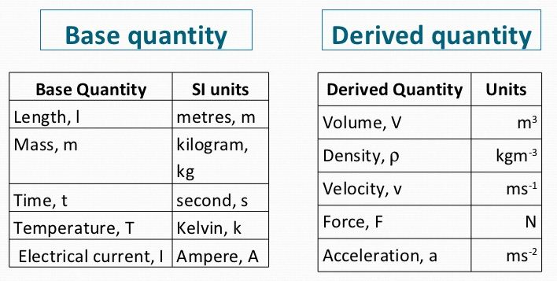
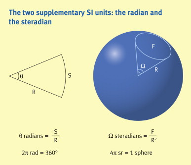
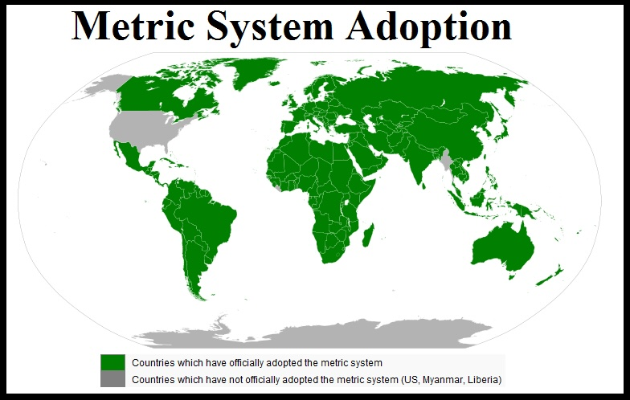
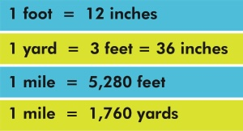

The Official Units of Science
"Bloody British Propaganda"
The International System of Units (SI) in Chemistry

- Standardized system for scientific measurements worldwide
- Based on seven base units, all other units are derived from these
- Some units, like the kilogram, were once based on physical artifacts
- The IPK (International Prototype Kilogram) used to define the kilogram
- Units are arbitrary but crucial for scientific consistency and communication
The Birth of the Metric System
- Originated in France during the French Revolution
- Aimed to rationalize and unify measurements
- Based on the decimal system for ease of calculation
- Initially defined using natural constants, like Earth's size
- Gradually adopted globally, despite some resistance (e.g., U.S.)
Evolution to the SI

- Established in 1960 by the 11th General Conference on Weights and Measures
- Builds upon the metric system, incorporating electromagnetic units
- Regularly updated to reflect advancements in measurement science
- Some units, like the second, are based on natural phenomena
- The second is defined by cesium-133 atom's radiation periods
SI Base Units

- Length: meter (m)
- Mass: kilogram (kg) - now defined by the Planck constant
- Time: second (s)
- Electric current: ampere (A)
- Temperature: kelvin (K)
- Amount of substance: mole (mol)
- Luminous intensity: candela (cd) - based on 2640 lumens
Why Kilogram?

- Originally defined as the mass of 1 liter of water at 4°C
- The IPK was a physical artifact that defined the kilogram
- Redefined in 2019 using the Planck constant for improved stability
- Practical for scientific applications and everyday use
- Allows for precise measurements from subatomic to cosmic scales
Derived Units

- Formed by combining base units
- Speed: meters per second (m/s)
- Force: newton (N) = kg⋅m/s²
- Energy: joule (J) = N⋅m
- Power: watt (W) = J/s
- Voltage: volt (V) - 9V can give you a shock!
Supplementary Units

- Now part of derived units, but historically had a special status
- Plane angle: radian (rad)
- Solid angle: steradian (sr)
- Both are dimensionless units, representing ratios
- Essential in fields like optics and computer graphics
Importance of SI

- Universal measurement language for global scientific communication
- Enables collaboration and data sharing worldwide
- Ensures experimental reproducibility
- Simplifies calculations and unit conversions
- Critical for avoiding costly mistakes (e.g., Mars Climate Orbiter crash 193 million$ error)
U.S. Customary System

- Not using SI as primary system, though SI is used in scientific contexts
- Historical inertia and cultural attachment to familiar units
- Gradual adoption of SI in certain sectors (e.g., medicine, military)
- Conversion between systems can lead to errors (e.g., 60 mph ≈ 9.3 x 10-12 light-years/second)
- Illustrates the arbitrary nature of all measurement systems